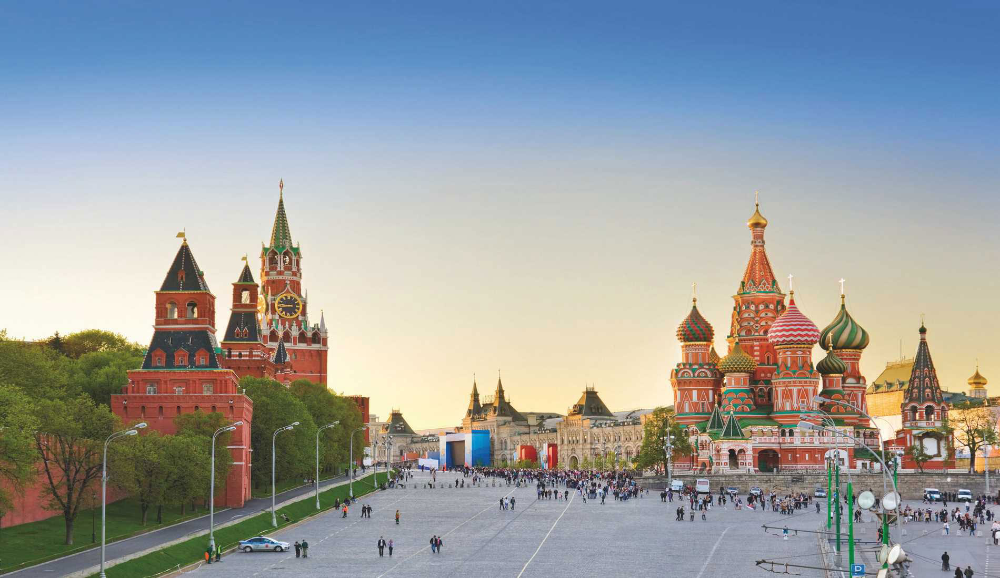
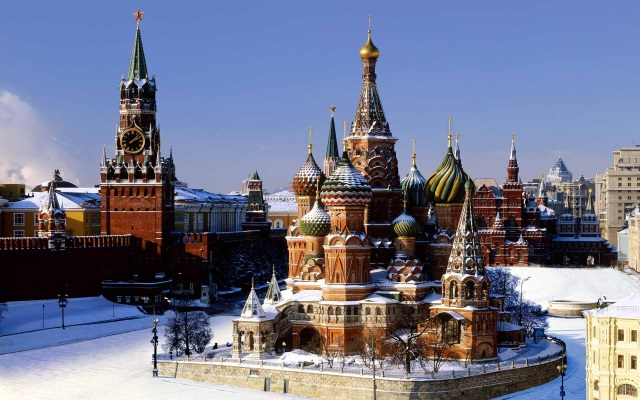
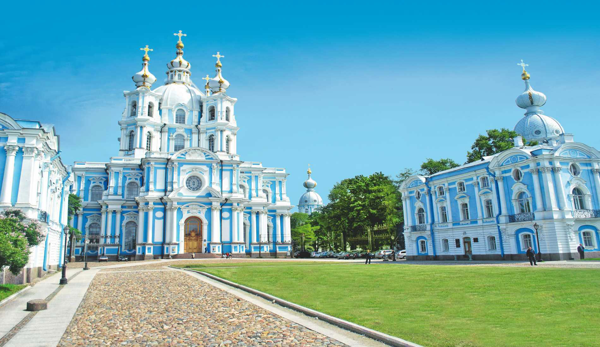
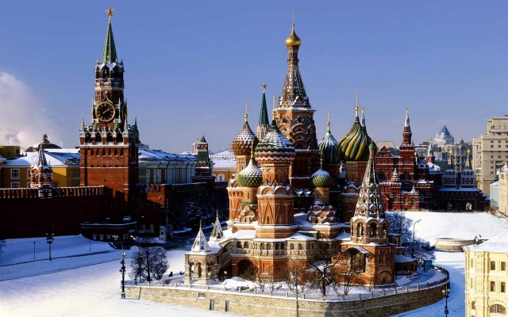
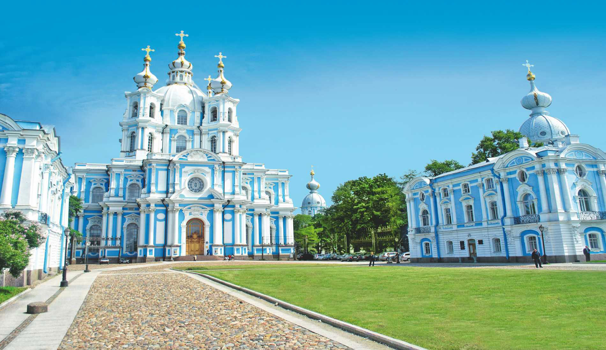
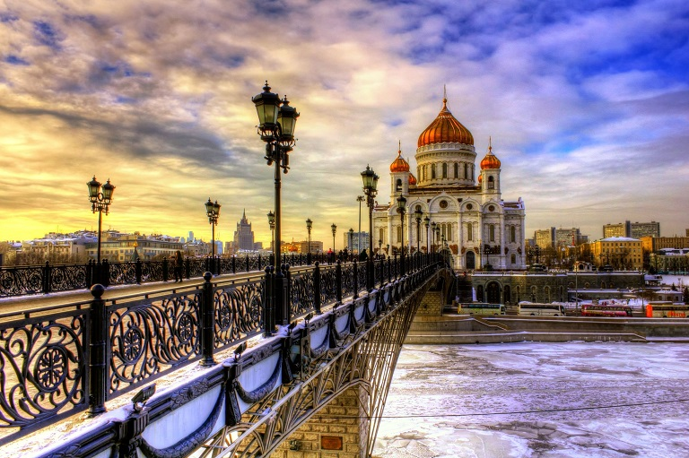
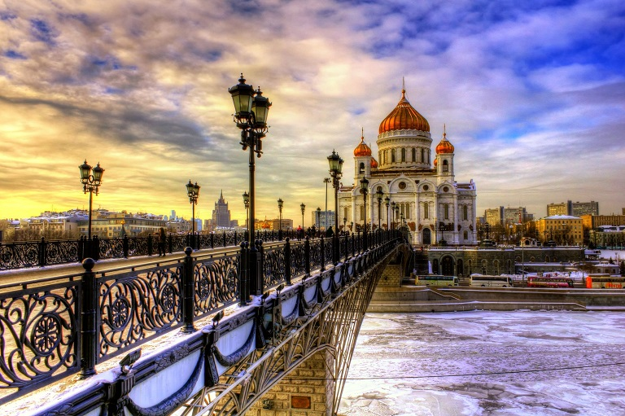

St. Petersburg
Welcome to St. Petersburg
Once a desolate swamp, Russia's imperial capital is today a dazzling metropolis whose sheer grandeur never fails to amaze.
There is something about St Petersburg that gets under your skin. Despite preferring Moscow when I first came to Russia almost two decades ago, St Petersburg lingered; its colours and incredible light stayed with me, its history haunted me. When I came to live in Russia in 2000, I didn’t hesitate in choosing St Petersburg. Today what excites me about the city is the growing underground art and music scene, the hedonistic atmosphere and the sense that great things are once again happening here. The city has emerged from Moscow’s shadow and will, I hope, show you a very different side to modern Russia.
Built from nothing by westward-looking Peter the Great, St Petersburg was from its inception to be a display of imperial Russia’s growing status in the world. Fine-tuned by Peter’s successors, who employed a host of European architects to add fabulous palaces and cathedrals to the city’s layout, St Petersburg grew to be the Romanovs’ showcase capital and Russia’s first great, modern city, a status it has retained despite the capital moving back to Moscow following the revolution. Despite all that history has thrown at it, St Petersburg still feels every bit the imperial capital, a city largely frozen in time.
Whether you’re cruising the elegant canals, crossing one of the 342 bridges in the city, or just watching them being raised over the mighty Neva River at night to allow ships to pass through, you’re never far from water in St Petersburg, which has earned the city unsurprising comparisons to Venice. The similarities don’t stop there, though: any wander in the historic centre will reveal canals lined by Italianate mansions and broken up by striking plazas adorned with baroque and neoclassical palaces.
Top experiences
-
State Hermitage Museum
Mainly set in the magnificent Winter Palace and adjoining buildings, the Hermitage fully lives up to its sterling reputation. You can be absorbed by its treasures for days and still come out wanting more. The enormous collection (over three million items, only a fraction of which are on display in 360 rooms) almost amounts to a comprehensive history of Western European art. Viewing it demands a little planning, so choose the areas you’d like to concentrate on before you arrive.
-
Grand Palace
The Grand Palace is an imposing building, although with just 30-something rooms, it is not nearly as large as your typical tsarist palace. From the start of June to the end of September it is open to foreign tourists only between 10.30am and noon, and again from 2.30pm until 4.15pm, due to guided tours being only in Russian at other times (it is quite possible to leave your group, however).
-
Kunstkamera
Also known as the Museum of Ethnology and Anthropology, the Kunstkamera is the city’s first museum and was founded in 1714 by Peter himself. It is famous largely for its ghoulish collection of monstrosities, preserved ‘freaks’, two-headed mutant foetuses, deformed animals and odd body parts, all collected by Peter with the aim of educating the notoriously superstitious Russian people. While most rush to see these sad specimens, there are also very interesting exhibitions on native peoples from around the world.
-
Yusupov Palace
This spectacular palace on the Moyka River has some of best 19th-century interiors in the city, in addition to a fascinating and gruesome history. The palace’s last owner was the eccentric Prince Felix Yusupov, a high-society darling and at one time the richest man in Russia. Most notoriously, the palace is the place where Grigory Rasputin was murdered in 1916, and the basement where this now infamous plot unravelled can be visited as part of a guided tour.
-
Mariinsky Theatre
The Mariinsky Theatre has played a pivotal role in Russian ballet ever since it was built in 1859 and remains one of Russia's most loved and respected cultural institutions. Its pretty green-and-white main building on aptly named Teatralnaya pl (Theatre Sq) is a must for any visitor wanting to see one of the world's great ballet and opera stages, while its brand-new second stage, the Mariinsky II, is a state-of-the-art opera house for the 21st century.
-
Catherine Palace
The centrepiece of Tsarskoe Selo, created under Empresses Elizabeth and Catherine the Great between 1744 and 1796, is the vast baroque Catherine Palace, designed by Rastrelli and named after Peter the Great’s second wife. The palace can only be visited by individuals between noon and 2pm, and 4pm and 4.45pm, otherwise it's reserved for pre-booked tour groups, such is its rightful popularity. The audioguide is well worth taking, as it gives detailed explanation of what you'll see in each room.
-
Catherine Park
Around the Catherine Palace extends the lovely Catherine Park. The main entrance is on Sadovaya ul, next to the Palace Chapel. The park extends around the ornamental Great Pond and contains an array of interesting buildings, follies and pavilions. Near the Catherine Palace, the Cameron Gallery normally has rotating exhibitions. Between the gallery and the palace, notice the south-pointing ramp that Cameron added for the ageing empress to walk down into the park.
-
Hermitage Storage Facility
Guided tours of the Hermitage’s state-of-the-art restoration and storage facility are highly recommended. This is not a formal exhibition as such, but the guides are knowledgable and the examples chosen for display (paintings, furniture and carriages) are wonderful. The storage facility is directly behind the big shopping centre opposite the metro station – look for the enormous golden-yellow glass facility decorated with shapes inspired by petroglyphs.
Discover the beauty of St. Peterburg
 





 
